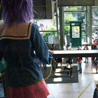

Satori Komeiji
Touhou
Subterranean Animism
Worn at: Sakuracon 2014
The third eye was probably the hardest prop I've made to date. I hand painted the eye on a styrofoam ball and painted and wired the tubing.
This was by far the worst cosplay to walk around in. I couldn't carry anything. I'm glad I had friends around to hold my phone and wallet.
